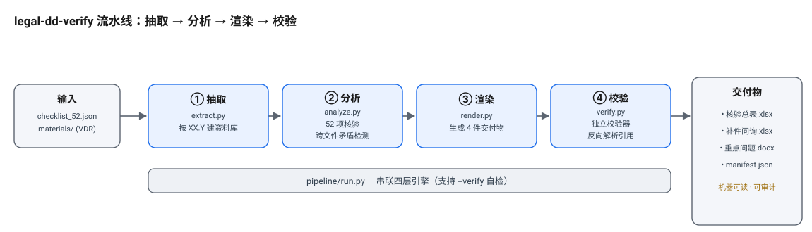

A data-driven legal due-diligence document verification & supplement-request pipeline
legal-dd-verify reads a due-diligence checklist and a virtual data room (VDR),
verifies document provision item by item, detects cross-file contradictions, generates
supplement requests and key-issue memos, and emits
4 machine-readable deliverables.
The whole pipeline runs offline with zero installation: dependencies are vendored in
vendor/, so no pip install and no network access are required at runtime.
The most underestimated workload in due diligence is reconciling a pile of PDF / XLSX / DOCX materials from the target company against a long checklist, line by line:
legal-dd-verify turns these steps into a reproducible pipeline, so lawyers can focus on
"judgment and negotiation" rather than "flipping files and filling forms."
| Stage | Module | Responsibility |
|---|---|---|
| Extract | pipeline/extract.py | Reads PDF / XLSX / DOCX (or offline .txt extracted views) and builds a material store keyed by the stable XX.Y document prefix |
| Analyze | pipeline/analyze.py | 52-item verification + structural cross-file contradiction detection (no hardcoded answers) |
| Render | pipeline/render.py | Generates the 4 deliverables |
| Verify | pipeline/verify.py | Independent verifier: resolves citations, validates enums and core-risk coverage |
| Orchestrate | pipeline/run.py | Chains the four layers; supports --verify self-check |

| File | Content |
|---|---|
尽调清单核验与反馈表.xlsx | 52-item verification: status / fact summary / evidence location (to the file) / gap / risk level / disposition / needs-human-review |
补件问询清单.xlsx | Deduplicated supplement requests with type and basis |
重点问题摘要.docx | Scope & review / executive summary / cross-file contradictions / statistics / key issues / prioritized supplements & next steps |
result_manifest.json | Machine-readable list: items / key_issues / cross_file_contradictions |
The engine is data-driven: a demo data room is just a synthetic document set conforming to the
schema; switching it makes the same engine re-derive every conclusion. Two fully independent,
proper-noun-disjoint synthetic data rooms are bundled — cloudlink (Yunqi SaaS) and
hanwei_semi (Hanwei Semiconductor / AI chips) — each with its own three planted structural issues.
# After clone — no pip install, no network cd legal-dd-verify # End-to-end run (extract -> analyze -> render -> verify) — default scenario python3 pipeline/run.py --scenario cloudlink --out out --verify # Switch to the semiconductor scenario (self-contained under scenarios/hanwei_semi/) python3 pipeline/run.py --scenario scenarios/hanwei_semi --out out2 --verify # Offline smoke test (same command as GitHub CI; covers every bundled scenario) python3 tests/smoke_test.py
Expected output includes RESULT: PASS: 52 unique items, 3 structural contradictions,
4 core-risk categories fully covered, 0 unresolved citations (for every scenario).
Released under the MIT License (see LICENSE).
Author: vickywu97 (Lawyer · Tax Advisor · Patent Attorney, six years of legal practice; currently working in AI legal products).
Contact: LinkedIn · vickywu97@163.com